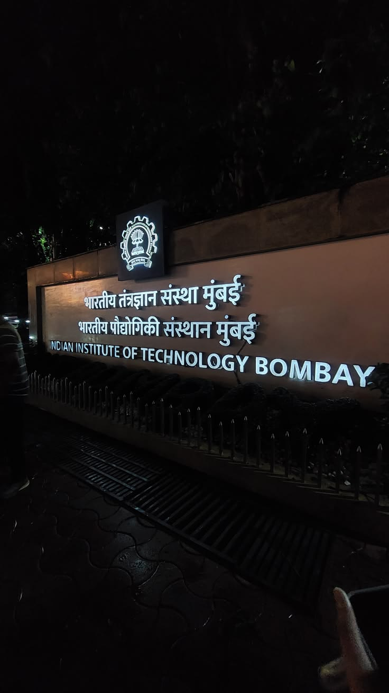
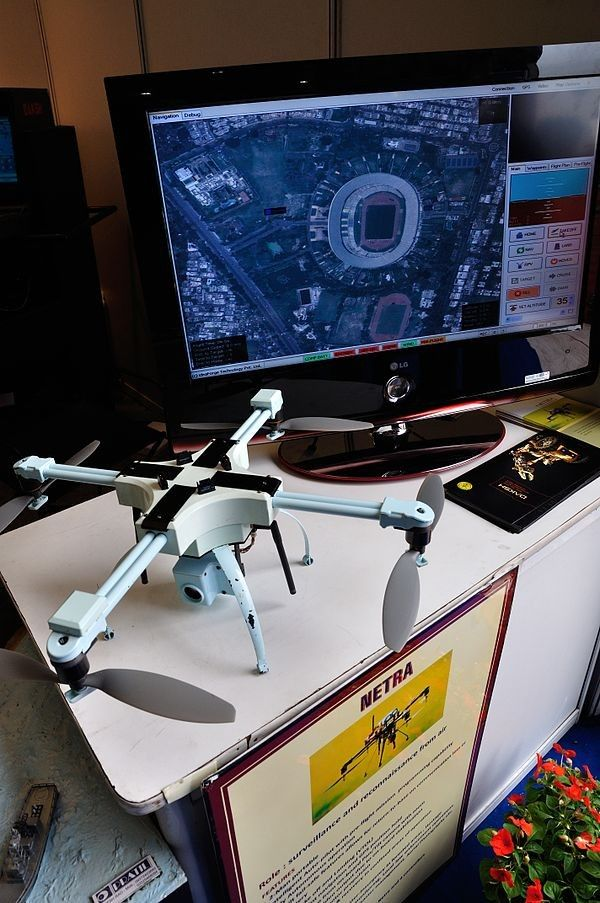

AI/ML ENGINEER · QUANTITATIVE ANALYTICS · RESEARCH
Systems that
learn.
Insights that
matter.
I build data-driven intelligence across machine learning, predictive analytics, financial and economic datasets, decision systems, and research-led applications.
DATA → MODELS → DECISIONS
SARA
MACHINE LEARNING ✳
DISTRIBUTION SHIFT ✳
FORECASTING ✳
DECISION INTELLIGENCE ✳
MULTIMODAL SYSTEMS ✳
EXPLAINABLE AI ✳
01 / PROFILE
Technical depth.
Applied context.
A portfolio built around academic research, public-sector datasets, industrial machine learning, and applied AI systems.
My work sits at the intersection of AI/ML engineering, quantitative analysis, and real-world decision-making. I am interested in models that are not only accurate, but interpretable, robust, and useful.
02 / SELECTED WORK
Built to be
useful.
Filter the portfolio by the kind of problem being solved.
Machine Learning Reliability Under Distribution Shift
A framework for temporal and spatial distribution shift using uncertainty, calibration, out-of-distribution detection, and abstention-aware evaluation. The work also extends reliability analysis to LLMs under adversarial and OOD inputs.
AI-Driven Supply Chain Intelligence Platform
A multi-engine XGBoost platform for demand forecasting, risk analysis, scenario exploration, and supply-chain decision support, paired with SHAP-based interpretation and a Next.js interface.
Decision Intelligence for Financial & Economic Data
Analysis of PMMY, PLFS, and Udyam datasets, including credit access, loan disbursement, borrower categories, employment, wages, skills, and enterprise-registration indicators for evidence-based policy analysis.
ECOAVIA
Data-driven aviation demand forecasting for sustainable policy advisory, using ensemble XGBoost, ARIMA, and LSTM approaches with climate and infrastructure variables. Published at ICISC 2026.
Physics-Informed Building Energy Modeling
A physics-informed neural network integrating HVAC, weather, building, and IoT data for predictive building-energy modeling, heat-load profiles, and evaluation across varying conditions.
Multimodal Research for Defence-Oriented Analytics
Ongoing volunteer research involving heterogeneous data modalities, complex-source integration and interpretation, structured experimentation, and model assessment for defence-oriented analytical systems.
03 / EXPERIENCE
Different domains.
One toolkit.
From public-sector datasets to academic research and industrial ML systems.
DRDO · Volunteer AI/ML Researcher
Ongoing scientist-supervised research involving heterogeneous data modalities and structured experimentation for defence-oriented analytical systems.
IIT Bombay · AI/ML Intern
End-to-end machine-learning research for spatial scene understanding in architectural environments, including dataset preparation, model development, and evaluation.
NITI Aayog · Data Management & Analysis Intern
Analyzed government datasets related to credit, loans, employment, wages, skills, and enterprise registration. Contributed to AI-powered decision intelligence and explored Logistic Regression and Random Forest models for entrepreneurial trajectories and risk-oriented policy analysis.
Fluentgrid Limited · Python & ML Intern
Developed a multi-engine XGBoost forecasting system for supply-chain intelligence, including demand, risk, scenario analysis, operational data processing, feature engineering, and SHAP interpretation.
Inferrix Greentech · AI Research Intern
Worked on a physics-informed neural network for predictive building-energy modeling using HVAC, weather, building, and IoT data. Generated heat-load profiles and evaluated varying conditions.
INSTITUTIONAL CONTEXT
Add approved, high-resolution institutional photographs to the image paths in the HTML. The cards include fallback gradients if an image is unavailable.


04 / RESEARCH & SKILLS
Curiosity with
structure.
Research interests and technical capabilities drawn from the resume.
Modeling & ML
Logistic Regression · Random Forest · XGBoost · Neural Networks · Deep Learning · PINNs · Time-series modeling · Forecasting · Risk scoring · Model evaluation
Reliability & Explainability
Uncertainty estimation · Calibration · OOD detection · Abstention-aware modeling · Distribution-shift analysis · Explainable AI · SHAP
Engineering Stack
Python · SQL · JavaScript · Pandas · NumPy · PostgreSQL · PyTorch · TensorFlow · scikit-learn · MLflow · FastAPI · Docker · Git · CI/CD · Next.js
PUBLICATION
ECOAVIA: Data-Driven Aviation Demand Forecasting for Sustainable Policy Advisory
Published at ICISC 2026. The work combines ensemble forecasting methods with climate and infrastructure variables to support sustainability-oriented policy advisory.
05 / RESUME LIBRARY
One profile.
Multiple angles.
Choose the version aligned with the role you are targeting.
ROLE-ALIGNED DOCUMENTS
Make the first page count.
Keep one master resume and prepare focused variants for AI/ML engineering, quantitative analytics, financial analytics, research, and policy-oriented roles.
SARA SHARMA / CV SYSTEMAdd the corresponding PDF files to assets/resumes and update the file map in script.js.
06 / CONTACT
Have a hard problem?
Let’s model it.
Open to conversations around applied machine learning, research, quantitative analytics, forecasting, reliability, and decision intelligence.